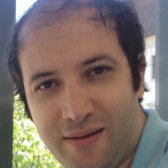

Corsi afferenti al SisInfLab Helpdesk
La richiesta di supporto dovrà avvenire, per ciascuna necessità, secondo le modalità sotto riportate.
Ricevimenti per lezioni, esami, revisione tesi
Tutti gli appuntamenti devono essere richiesti mediante gli appositi collegamenti presenti in fondo a questa pagina.
Ricevimenti per richiesta tesi
Tutti gli appuntamenti devono essere richiesti mediante gli appositi collegamenti presenti in fondo a questa pagina.
Fondamenti di Informatica (vecchi ordinamenti)
Tutti gli appuntamenti devono essere richiesti mediante gli appositi collegamenti presenti in fondo a questa pagina.
Vito Walter Anelli
vitowalter.anelli@poliba.it
Giovanni Maria Biancofiore
giovannimaria.biancofiore@poliba.it
Yashar Deldjoo

yasdel.github.io
yashar.deldjoo@poliba.it
Scrivi una mail per prenotare un appuntamento
Tommaso Di Noia
tommaso.dinoia@poliba.it
Antonio Ferrara
antonio.ferrara@poliba.it
Domenico Lofù
domenico.lofu@poliba.it
Scrivi una mail per prenotare un appuntamento
Daniele Malitesta
daniele.malitesta@poliba.it
Giulio Mallardi
giulio.mallardi@poliba.it
Scrivi una mail per prenotare un appuntamento
Alberto Carlo Maria Mancino
alberto.mancino@poliba.it
Fedelucio Narducci
fedelucio.narducci@poliba.it
Scrivi una mail per prenotare un appuntamento
Vincenzo Paparella
vincenzo.paparella@poliba.it
Gaetano Pernisco
gaetano.pernisco@poliba.it
Scrivi una mail per prenotare un appuntamento
Claudio Pomo
claudio.pomo@poliba.it